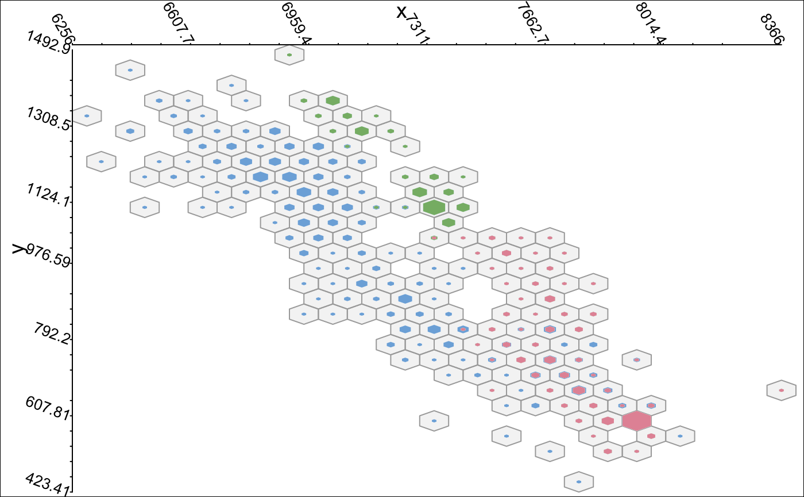

hexpie.RdThis function bins two continuous variables into a hexagonal grid and represents a third variable (which is usually a factor) via piecharts or nested hexagons within the bins. The main idea is to avoid overplotting and unfortunate effects that emerge from mixing up colors, e.g. with alpha-blending.
hexpie(x, y = NULL, z = NULL, n = 24, shape = "hex", p.rule = "radial", decr.by.rank = NULL, freq.trans = I, alpha.freq = FALSE, col = "hcl", col.opt = list(), show.hex = TRUE, random = NULL, xlim = range(x), ylim = range(y), label.opt = list(), vp = NULL)
| x | The variable for the horizontal axis. Should be integer or numeric. |
|---|---|
| y | The variable for the vertical axis. Should be integer or numeric. |
| z | The target variable for the colors which is handled as a factor. |
| n | The number of bins into which x is divided. See hexbin. |
| shape | There are two possibilities: |
| p.rule | This controls the rules for the representation of the relative frequencies of the target categories.
For |
| decr.by.rank | Whether or not to sort the categories within each hexagon individually by their frequencies in decreasing order.
Defaults to |
| freq.trans | A function which is used to rescale the total counts of the cells. |
| alpha.freq | The frequencies may additionally be reflected in terms of the alpha values of the colors. |
| col | The choice of a color palette. See rmb for further explanations. |
| col.opt | Additional color options to replace the defaults. See rmb for further explanations. |
| show.hex | Whether or not to draw the hexagons. Setting |
| random | If this is not |
| xlim | A vector of length 2 defining the x-limits e.g. computed via innerval . |
| ylim | A vector of length 2 defining the y-limits e.g. computed via innerval . |
| label.opt | Additional labeling options to replace the defaults. Not yet implemented. |
| vp | A viewport to plot in, e.g. for conditional plots. |
# NOT RUN { # zooming in (transformation of the total number of obs in each bin) hexpie(x,y,z, freq.trans=sqrt) # circular shapes hexpie(x,y,z, freq.trans=sqrt, shape="pie") # classical piecharts hexpie(x,y,z, freq.trans=sqrt, shape="pie", p.rule ="angles") # the total numbers of obs are reflected via alpha-blending, # the grid is not shown and RGB colors are used hexpie(x,y,z, freq.trans=sqrt, shape="hex", p.rule ="radial", alpha.freq=TRUE, col ="rgb",show.hex=F) hexpie(x,y,z, freq.trans=NULL, shape="hex", p.rule ="radial", alpha.freq=TRUE, col ="rgb",show.hex=T) require(ggplot2) data(diamonds) x2 <- diamonds$carat y2 <- diamonds$price z2 <- diamonds$color # a standard plot with colors via ggplot2 qplot(x2,y2,colour=z2) # the hexpie version hexpie(x2,y2,z2,n=36) # due to the few bins with the majority of observations # it is sensible to zoom in hexpie(x2,y2,z2,n=36,freq.trans=function(s) log(1+s)) # the same, but this time the central color is the most frequent one hexpie(x2,y2,z2,n=36,freq.trans=function(s) log(1+s), decr.by.rank = TRUE) # this way the difference is more obvious # (although the color palette is better suited for ordinal target variables) mat.layout <- grid.layout(nrow = 1 , ncol = 2 , widths = c(1/2,1/2), heights=1) grid.newpage() vp.mat <- viewport(layout = mat.layout) pushViewport(vp.mat) vp1 <- viewport(layout.pos.row = 1, layout.pos.col = 1) pushViewport(vp1) hexpie(x2,y2,z2,n=18,freq.trans=NULL, decr.by.rank=NULL,col="div", vp = vp1) vp2 <- viewport(layout.pos.row = 1, layout.pos.col = 2) pushViewport(vp2) hexpie(x2,y2,z2,n=18,freq.trans=NULL, decr.by.rank=T,col="div", vp = vp1) popViewport() # random samples from the data (within bins) with many bins # (takes some time) require(scales) grid.newpage() hexpie(x2,y2,z2, freq.trans=function(s) log(1+s),random=1, n=240, show.hex=FALSE, col.opt=list(bg=alpha(1,0.7)),shape="c",col="rgb") # }